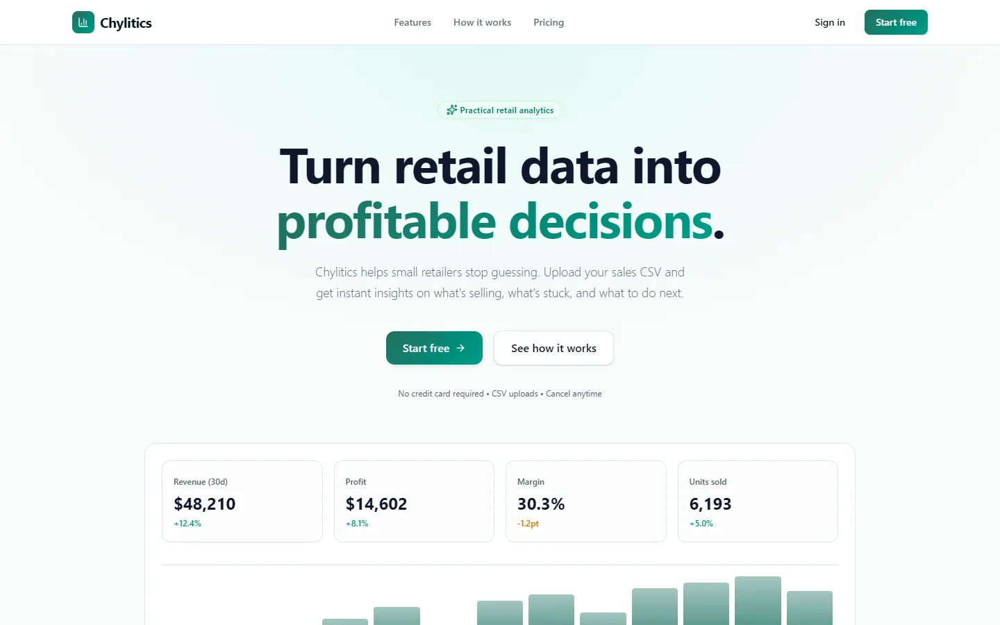
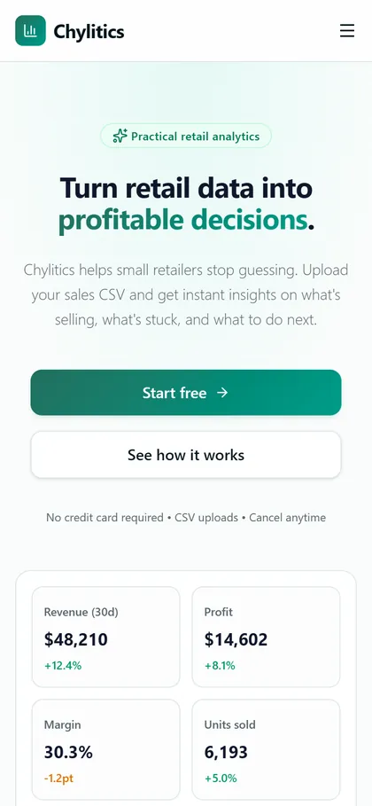
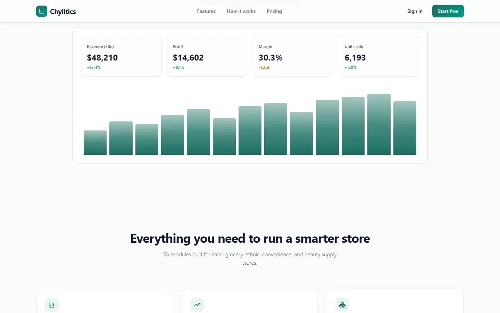
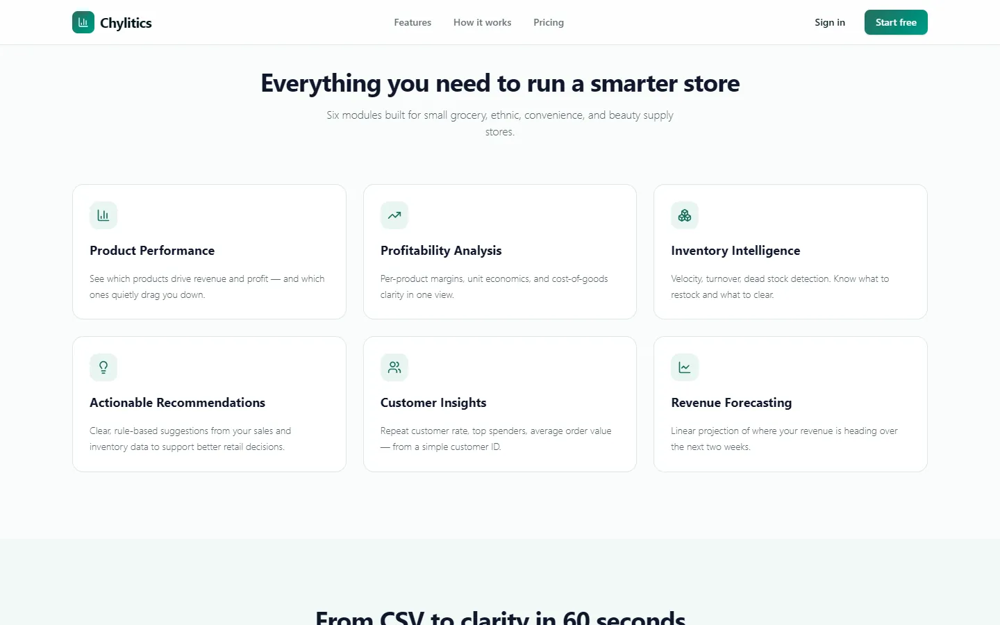
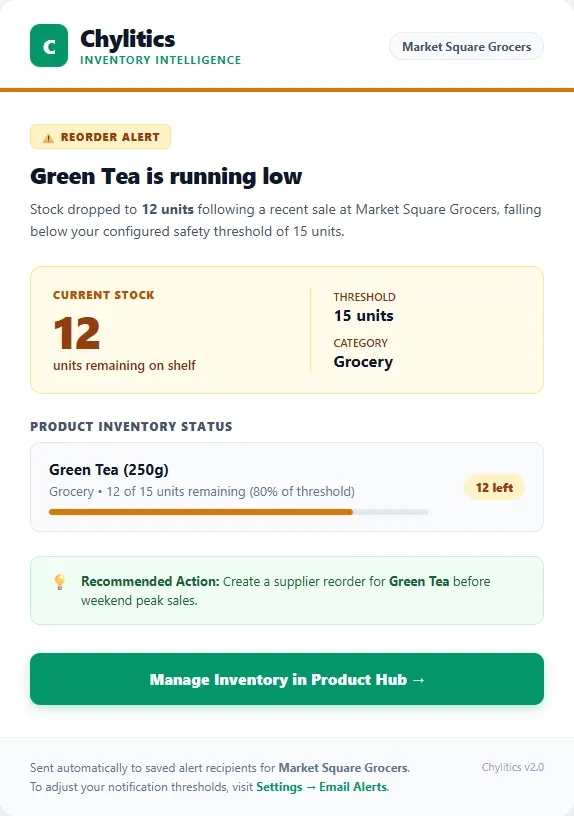

Showing small shops what their sales data already knows.


Overview
Chylitics is retail analytics for small grocery, ethnic, convenience and beauty stores. A shop uploads its sales file and sees what is selling, what is stuck, what is about to expire and what to do next.
I built it end to end: the database, the security rules, the dashboards and the email alerts.
The data is there. The answers aren’t.
Small retailers already have their sales in a point-of-sale export or a spreadsheet. What they don’t have is time to turn it into decisions: which products actually make money, which ones are tying up cash, and which batches will expire on the shelf.
Most analytics tools are built for chains, priced for chains, and expect a data team to set them up.
Three rules I built around.
- Start from a fileNo integrations to set up on day one. Upload the CSV a shop already has, and the dashboard fills in.
- Trust the numbersUploading the same file twice must never count a sale twice, and stock comes out of the oldest batch first, the way a real shelf works.
- Keep shops apartOne shop must never see another’s data. That rule lives in the database itself, not only in the app code, and it is tested.
From a sales file to a decision.
One view of the business
Revenue, profit, margin and units sold sit at the top, with the trend underneath, so the owner can see in seconds whether the month is going well.

Six areas, one job each
Product performance, profitability, inventory, recommendations, customer insights and a simple revenue forecast. Each answers one question a shop owner actually asks.

An email before it becomes a loss
When stock runs low or a batch gets close to its expiry date, the shop gets an email, with the products and what to do about them. Owners choose which alerts they want.

Where it stands.
Chylitics is live with sign-up, uploads, dashboards and email alerts working. Next is connecting point-of-sale systems directly, so shops don’t need to export a file at all.
Reflection
The interesting work here was underneath the charts. A dashboard is only as good as the numbers going into it, so most of my time went into making uploads safe to repeat, stock movements exact, and data separation something the database proves rather than something the app promises.